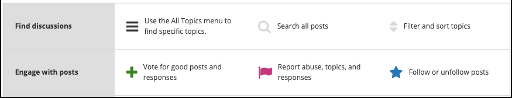
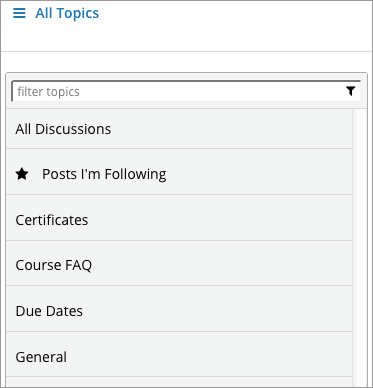
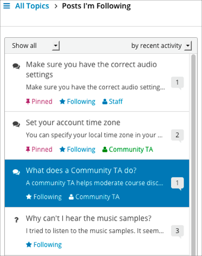

11.1. Anatomy of Course Discussions¶
This section describes the structure and elements of course discussions.
For information about how to participate in course discussions, see Taking Part in Course Discussions.
11.1.1. Basic Elements: Topics, Posts, Responses, and Comments¶
The following example shows the different ways that you can contribute to a discussion.
Post: "Please introduce yourself."
- Response: "My name is Lee and I teach secondary school maths in Canberra,
Australia."
- Response: "Hello everyone, I am Sumei from Hong Kong, China."
- Comment: "Hi Sumei, I am taking this course in Hong Kong too. Maybe we
should make a study group!"
- Comment: "I'd like to join the Hong Kong study group too, I think it
will help me keep up with the homework."
- Response: "Hi from Johannesburg! I am taking the course to prepare for my
matric exams."
A post initiates the conversation, responses are replies to a post, and comments expand on specific responses. Before you add a post, response, or comment to your course discussion, take a moment to consider which of these options best suits the contribution that you want to make. This helps keep course discussions organized and easy to follow.
Every post is associated with a topic, chosen from the list of topics created by the course team. For information about topics, see Discussion Topics.
For more information about joining the discussions in your course, see Exploring Discussion Posts and Taking Part in Course Discussions.
11.1.1.1. Discussion Topics¶
Discussion topics are created by the course team and organize all posts in the course discussion. Discussion topics can be course-wide or content-specific.
Course-wide discussion topics cover matters that affect the entire course, and can include topics such as “Frequently Asked Questions” and “Troubleshooting”. In the discussion navigation pane, course-wide topics do not have other topics indented below them.
Content-specific discussion topics are added as part of a course unit, and relate to specific video lectures, reading assignments, homework problems, or other course content. In the discussion navigation pane on the Discussion page, content-specific topics are indented under an identifying category name.
For course-wide topics, you read or add posts, responses, and comments on the Discussion page. For content-specific discussion topics, you can read or add posts, responses, and comments both on the Discussion page and in the discussion that is embedded in the course unit on the Course page.
Before you add a post, look through the topics. When you add your post to the most appropriate topic, others with the same interest can find, read, and respond to it more easily.
11.1.1.2. Types of Discussion Posts¶
When you make a contribution in a course discussion topic, you add your post as either a question or a discussion.
A question post raises an issue so that members of the discussion administration team and the course community can provide answers.
A discussion post starts a conversation by sharing thoughts and reflections, and inviting community participation.
When you add a post to a discussion topic, you must specify whether it is a question or a discussion.
On the Discussion page for your course, a question mark icon identifies posts that ask questions and a conversation bubble icon identifies posts that start discussions.
If you have any difficulty deciding which type of post you want to add, think about whether you want to get concrete information (a question) or start an open-ended conversation (a discussion). If you require an answer from the course team, be sure to create your post as a question, so that the course team sees that a response is required and responds appropriately.
11.1.2. The Discussion Page¶
You browse and contribute to course discussions on the Discussion page for your course.
11.1.2.1. How to Use Discussions¶
The How to use edX discussions graphic appears in the main area of the Discussion page when you have not selected any topics or posts.
This graphic shows the basic actions you can take with course discussions.
{kind=link}
When you browse topics and posts from the Discussion Navigation Pane, the How to use edX discussions graphic is replaced by the contents of the topic or post that you selected.
11.1.2.2. Discussion Navigation Pane¶
Use the discussion navigation pane on the left side of the Discussions page to access discussion topics and posts in your course, including discussions that appear inline in course content.
You can view all discussion topics or only the posts that you are following, or you can view a specific topic. You can also filter posts by entering keywords or phrases that you want to find in post titles or text.
{kind=link}
The breadcrumb path above the navigation pane shows you the topic that you are currently viewing. In the following example, Posts I’m Following is selected.
{kind=link}
When you view topics and posts, the navigation pane shows various icons and labels to provide you with information about the status or content of posts.

Posts that appear in blue type with a blue bar indicate posts that you have not read.
Posts that appear in gray type without a bar indicate posts that you have read.
The post type icon indicates whether a post is a question or a discussion. For more information, see Determining the Post Type: Discussion or Question.
The check mark icon indicates a “correct answer”. The check mark icon indicates that one of the responses to the post correctly answers the question asked in the post.
The response or comment count indicator shows the number of responses and comments for a post. The number of new responses or comments that were added after you previously read a post is displayed next to the indicator. For more information, see Keeping Up with New Activity.
A “Pinned” label shows that a post has been pinned by administrators so that it always stays at the top of the topic list regardless of sort order.
A “Following” label marks posts that you are following.
A “Staff” or “Community TA” label marks posts that were added by course staff or community teaching assistants (TAs).